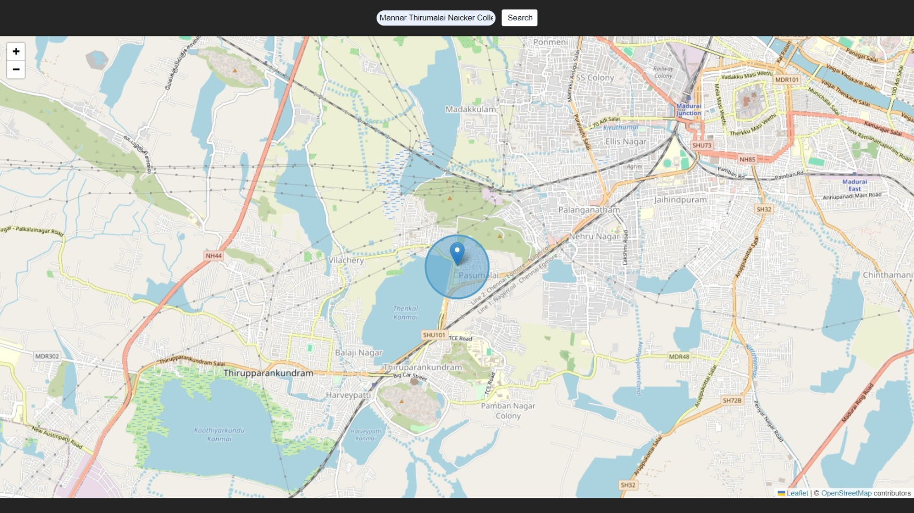

Maps Feature :
Here is a Facility of Maps in which you can navigate the whole world from our own UI.
Build :
As you see a Search bar in the App at the top center. You can search from there.
=> The Google Maps API is a paid version. so I surf through the web and found that there is another way for it. That is,
Firstly, the Word Search of the places should be converted into Coordinates which is the Latitude and Longtitude of the places. It is also a paid one in google geo api.
So, I firstly sends your input word to the Nominatim API and fetch the corresponding Coordinates and then I gave that as an input to the Leaflet - Javascript Map Library and make the search for Coordinates and locate the map for that.
Screenshots:

Advantages:
AI Integrated ! If you ask AI with preceeding "" @maps "" and your queries , it will suggest you the places there and if you want to see, you can click and go to that destination in maps automatically.
Disadvantages:
As it is a Free of cost thing, here is also the money matters. Yes, all the places in our locality is not available in the free maps. If it is available, it will redirect you otherwise it won't.